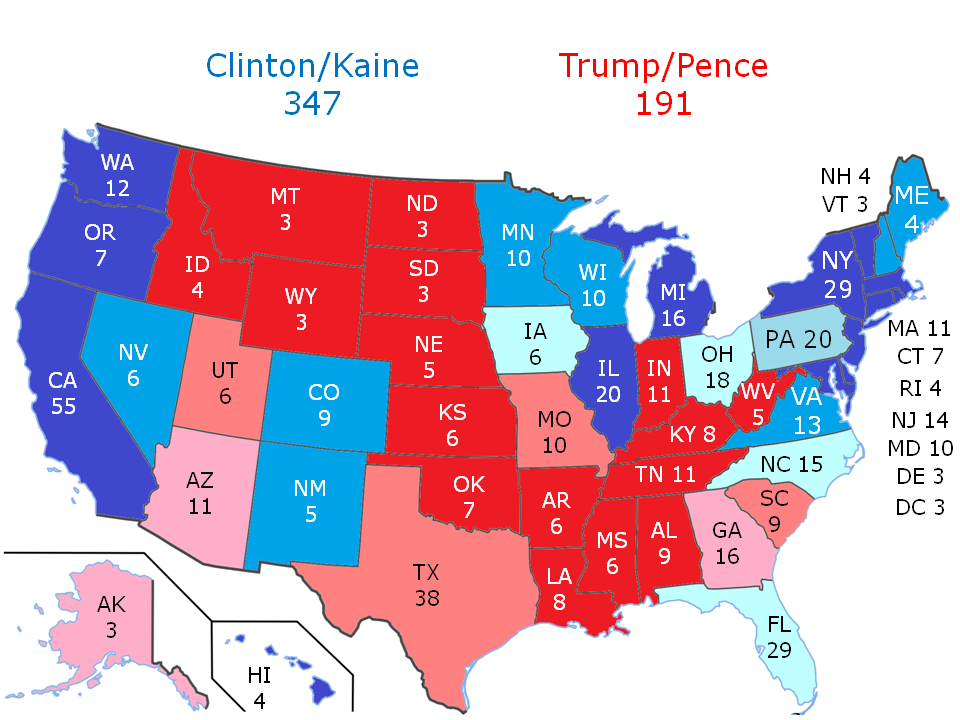

For every election since 2008, I’ve tried to make a prediction as to who will win the election, by how much, and why. With every season, I’ve tried to become more scientific and accurate with my models, and some years have been more successful than others. My 2012 prediction called every state in the Union in the presidential election, so with luck I’ll repeat that success this year. Nonetheless, this being a highly unconventional year, traditional methods, no matter how accurate they may have been in the past, may still fail this election season. The biggest potential pitfall in this Bayesian model is that it assumes that the errors in polling will be the same as that of 2012, and that voter turnout will match that of 2012. To put on a twist on a classic quote - we’re always trying to analyze the last election. Anything can still happen - a high minority turnout for Clinton or silent Trump supporters tipping the election for Trump. Hence, I wouldn’t be too surprised if this model has a systematic error. I suppose we’ll find out how terribly wrong this analysis is in about 24 hours.
My current methodology, the 2016 model, is to create a weighted average of the major polls - with outliers receiving lower weights and polls closer to the median with a higher weight. Then I will curve that average using the difference between what that average would have predicted in the 2012 election and the actual result. As alternative models, I also create a weighted average of the most accurate polls of the 2012 election and the 2008 election to predict this year’s outcome. This model is denoted Model A. I also average a series of polls with a curve based on the difference of each individual poll to the actual result in 2012 and 2008, denoted Model B.
Note: This forecast is not an endorsement of any presidential candidate, was not derived to favor any candidate, and does not aim to detract any particular individual or group of individuals from voting.
So here are the results:
| Year | Model | Average |
| 2016 | ALL | Clinton +5.4 |
| 2012 | A | Clinton +5.6 |
| 2012 | B | Clinton +7.2 |
| 2008 | A | Clinton +3.0 |
| 2008 | B | Clinton +3.9 |
Weighted Average: Clinton +5.4

If this is wrong, it's probably because of Iowa and Ohio, where the projections are by margins of 0.4 and 0.008 points respectively. So other likely electoral college breakdowns include:
- Clinton 329 to Trump 209 (Ohio goes for Trump)
- Clinton 323 to Trump 215 (both Iowa and Ohio go for Trump)
- Clinton 341 to Trump 197 (Iowa goes for Trump).
| State | 2016 Model | 2012 Model | Average |
| Arizona | Trump +1.5 | -- | Trump +1.5 |
| Colorado | Clinton +5.7 | Clinton +5.3 | Clinton +5.5 |
| Florida | Clinton +1.5 | Clinton +1.7 | Clinton +1.6 |
| Georgia | Trump +2.5 | Trump +3.0 | Trump +2.7 |
| Iowa | Clinton +0.4 | Clinton +0.4 | Clinton +0.4 |
| Michigan | Clinton +9.8 | Clinton +11.0 | Clinton +10.4 |
| Minnesota | Clinton +9.1 | -- | Clinton +9.1 |
| North Carolina | Clinton +1.9 | Clinton +1.8 | Clinton +1.8 |
| New Hampshire | Clinton +7.4 | Clinton +11.4 | Clinton +9.4 |
| Nevada | Clinton +5.4 | Clinton +5.5 | Clinton +5.5 |
| Ohio | Trump +0.4 | Clinton +0.4 | Clinton +0.008 |
| Pennsylvania | Clinton +3.8 | Clinton +5.4 | Clinton +4.6 |
| Virginia | Clinton +6.6 | Clinton +7.9 | Clinton +7.2 |
| State | 2016 Model | 2012 Model | Average |
| Alaska | Trump +4.2 | -- | Trump +4.2 |
| Indiana | Trump +10.1 | -- | Trump +10.1 |
| Maine | Clinton +9.4 | -- | Clinton +9.4 |
| Missouri | Trump +8.8 | -- | Trump +8.8 |
| New Mexico | Clinton +7.1 | Clinton +7.0 | Clinton +7.0 |
| Oregon | Clinton +15.2 | Clinton +16.2 | Clinton +15.7 |
| South Carolina | Trump +6.9 | -- | Trump +6.9 |
| Texas | Trump +6.8 | -- | Trump +6.8 |
| Utah | Trump +8.5 | -- | Trump +8.5 |
| Wisconsin | Clinton +8.0 | -- | Clinton +8.0 |
Solid Clinton (198): California, Connecticut, Delaware, District of Columbia, Hawaii, Illinois, Maryland, Massachusetts, Michigan, New Jersey, New York, Oregon, Rhode Island, Vermont, Washington
Likely Clinton (61): Colorado, Maine, Minnesota, Nevada, New Hampshire, New Mexico, Virginia, Wisconsin
Leans Clinton (20): Pennsylvania
Tossups tilting Clinton (68): Florida, Iowa, North Carolina, Ohio
Tossups tilting Trump (27): Arizona, Georgia
Leans Trump (3): Alaska
Likely Trump (63): Missouri, South Carolina, Texas, Utah
Solid Trump (98): Alabama, Arkansas, Idaho, Indiana, Kansas, Kentucky, Louisiana, Mississippi, Montana, Nebraska, North Dakota, Oklahoma, South Dakota, Tennessee, West Virginia, Wyoming
Arizona (Trump +1.5). This one might be a bit of a shock. Republicans have consistently carried this state, and the last Democrat to carry this state was Bill Clinton in 1996. Mitt Romney carried this state by 9 points in 2012. However, a growing Latino population has Arizona trending Democratic in recent years, and the candidacy of Donald Trump is making Arizona among the closest states this season despite the Trump campaign’s best efforts to hold Arizona. If Clinton has a big turnout in the Latino vote, she may very well be able to pick up deep red Arizona's 11 electoral votes.
Florida (Clinton +1.6). Florida as always - a traditional battleground state infamous for its role in the 2000 election. It has been trending Democratic in election years with a rising Latino population. Although Trump is banking on northern Florida and rural Florida for votes, his rhetoric towards Latinos and immigrants are driving large blocks of voters for Clinton. Both the Clinton campaign and the Trump campaign have heavily targeted Florida, but Clinton goes into Election Day with the upper hand. Trump must win Florida to get to 270 electoral votes.
Georgia (Trump +2.7). This one is also is a bit of a shock. Georgia has gone for the Republicans every election since 1996, and Mitt Romney won here by 8 points in 2012. Bill Clinton was the last Democrat to carry this Deep South state in 1992. However, the Clinton campaign is hoping to drive out African-American turnout for the Democrats this election, but even President Obama did not win Georgia in 2008 despite record African-American turnout. Another plus for Clinton is that Green Party candidate Jill Stein is not on the ballot here. If this state falls for Clinton early in the evening, we’re looking at a Clinton landslide, but that appears unlikely.
Iowa (Clinton +0.4). To be honest, I was a bit surprised to see both models showing Clinton leading here—almost every other model out there gives Trump the upper hand. Hence, I would not be surprised if my prediction here is wrong on Iowa - I would even say that of all 50 states, I'm most likely to be wrong about Iowa. Iowa has been a traditional battleground state, but the only Republican to have won Iowa since 1988 was George W. Bush in 2004. However, Iowa has been trending Republican in recent years. It voted for President Obama twice, by 9.5 points in 2008 and by 5.8 points in 2012. This state is in a dead heat. Donald Trump could win Iowa but still lose the Presidency.
North Carolina (Clinton +1.8). Barack Obama won here by a razor-thin 0.33 points in 2008 before losing it by 2 points in 2012. However, the growth of urban areas in North Carolina has this state trending Democratic. The Clinton campaign has poured massive resources into moving North Carolina back into the Democratic column and has sent President Obama to campaign here multiple times, and Clinton enters with the lead here. Green Party candidate Jill Stein is not on the ballot here, a situation that benefits Clinton. Donald Trump has little hope of winning without North Carolina.
Ohio (Clinton +0.008). It’s always Ohio, and given how close my model is, Ohio is a complete 50/50 tossup - I'd say this is the state that I'm second most likely to be wrong on. George W. Bush won this state twice, and Barack Obama won this state twice — by 3.0 points in 2012 and 4.6 points in 2008, but Ohio has been trending Republican in recent years, and Clinton has had trouble connecting to blue collar workers here. Polls indicate that third-party votes here almost exclusively siphon votes from Clinton, a key factor that could very well cost Clinton this state. Both Trump and Clinton have spent massive amounts of time and resources in Ohio. No Republican has won the Presidency without Ohio, but Donald Trump could win Ohio and still lose the election. This state enters election day in a dead heat, but Ohio is a must-win for Trump - if Trump loses Ohio, his path to 270 electoral votes, if existent, is very narrow.
Pennsylvania (Clinton +4.6). Donald Trump has been hoping to flip this traditionally Democratic state red, as had John McCain and Mitt Romney. However, this is a state that President Obama won by 5.4 points in 2012. Without Pennsylvania, Trump has an almost impossible route to victory—he would need to win Arizona, Florida, Georgia, Iowa, North Carolina, Ohio, plus two of the following three: Colorado, New Hampshire, and Nevada. If Clinton wins Pennsylvania, and it’s likely that she will, she will almost certainly win the Presidency.
Colorado (Clinton +5.5). This state voted for George W. Bush twice. However, a growing Latino population here has this state trending Democratic, but this is a state that voted overwhelmingly for Sen. Bernie Sanders (I-VT) in the primaries, which could mean trouble for Clinton. Colorado’s Democrats are very liberal, and millennial dissatisfaction with Clinton has been keeping her down in the polls.
Maine (Clinton +9.4). This traditionally Democratic state is among the two states that splits its electoral votes by congressional district. Donald Trump has been hoping to pick up one electoral vote from Maine’s rural 2nd congressional district, which is currently a toss-up. Nonetheless, Clinton is favored to win statewide and in both congressional districts.
Michigan (Clinton +10.4). This state is solid Clinton, even though it's being included in the analysis among likely Clinton states. Even though this state is traditionally Democratic, it is one that Donald Trump hopes to flip to his column in an eleventh hour by appealing to blue collar workers, especially since recent polls have showed him narrowing the gap here. However, it doesn’t seem like he will be able to—Clinton has maintained a solid lead.
Minnesota (Clinton +9.1). Minnesota is another traditionally Democratic state that Donald Trump hopes to flip to his column in a last-ditch effort similar to that of Mitt Romney in 2012 (Romney lost this state handily). However, it doesn’t seem like he will be able to—Clinton has maintained a steady lead here.
Nevada (Clinton +5.5). Nevada is another state that has been trending Democratic due to a growing Latino population. President Obama won here by 6.7 points in 2012, and Trump is expected to do badly here with Latino voters, if the early vote here is any indication. Moreover, Green Party candidate Jill Stein is not on the ballot here, giving an edge to Clinton.
New Hampshire (Clinton +9.4). If Al Gore carried New Hampshire, he would have won the election without carrying Florida. President Obama carried this state by 5.6 points in 2012, and it’s likely to stay Democratic. However, recent polls have shown New Hampshire approaching a dead heat - New Hampshire is a state that Hillary Clinton lost to Sen. Bernie Sanders (I-VT) in the primaries, and low turnout among dissatisfied Sanders voters, especially millennials, could possibly tip this state for Trump.
Virginia (Clinton +7.2). George W. Bush won this state twice, but the growth of the DC metropolitan area has this state trending Democratic. President Obama won here by 3.9 points in 2012, and the Trump campaign has all but given up on Sen. Tim Kaine’s home state. However, we should never be too comfortable with polls in Virginia. Two years ago, polls predicted that incumbent Sen. Mark Warner (D) would defeat challenger Ed Gillespie (R) by 10 points in the midterm Senate race only to win by a narrow 0.8 point margin. However, the electorate that turns out for the presidential election is much different from the one that turns out in midterm elections, and Clinton enters with a clear upper hand.
Wisconsin (Clinton +8.0). George W. Bush almost won this reliably Democratic state in 2004, but the last Republican to win here was Ronald Reagan in 1984. Although Wisconsin voted overwhelmingly for Sen. Bernie Sanders (I-VT) in the primaries, Clinton enters the election as the favorite here despite the Trump campaign's efforts here.
Alaska (Trump +4.2). This state might come as a surprise, but Alaska is a state that is almost impossible to poll, but the polls show a lead for Trump. Moreover, no Democrat has carried Alaska since Lyndon Johnson in his 1964 landslide victory.
Indiana (Trump +10.1). This state is solid Trump despite being analyzed among the likely Trump states. President Obama won this reliably Republican state in 2008 by 1 point, but did not focus on Indiana during his reelection bid. Indiana, a conservative stronghold and the home state of Trump's running mate Gov. Mike Pence, favors Donald Trump in the general election.
Missouri (Trump +8.8). Bill Clinton carried this state twice, and President Obama almost carried this state in 2008, but lost to John McCain by 0.13 points. However, Missouri, a state trending Republican, favors Donald Trump going into the election.
South Carolina (Trump +6.9). The last Democrat to win this reliably Republican state was Jimmy Carter in 1976. However, a large African-American turnout could narrow the margin of victory this election, but Donald Trump maintains a steady lead.
Texas (Trump +6.8). The last Democrat to win here was Jimmy Carter in 1976, and Mitt Romney defeated Barack Obama by 16 points here in 2012. Hence, it should come with alarm for Republicans that Donald Trump’s lead here is not as commanding as it could be in the home turf of the Bush dynasty, possibly driven by a growing Latino population and discontent among evangelicals with the Republican nominee. If Clinton can pull off a win in Texas, we’re likely to see a 1988-style landslide, but that possibility has all but diminished in the last couple of weeks. Donald Trump is favored to win here.
Utah (Trump +8.5). No Democrat has carried this state since Lyndon Johnson in 1964, and Mitt Romney trampled Barack Obama by 48 points here in 2012. However, Donald Trump’s rhetoric has turned off many voters in this heavily Mormon state. Libertarian candidate Gary Johnson was hoping for a win here, but his numbers plummeted following numerous foreign policy gaffes. Independent candidate Evan McMullin has a non-negligible following here—some polls have shown him in the lead. Despite Johnson and McMullin siphoning Republican votes here, Trump maintains a clear lead.